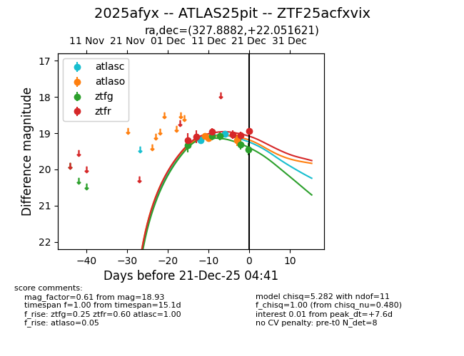
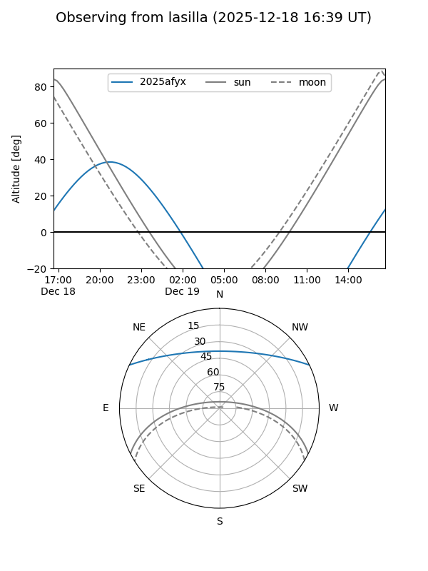
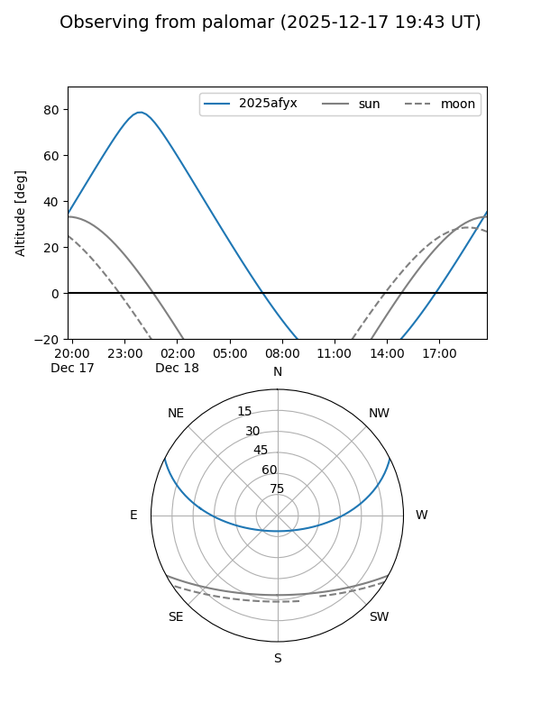
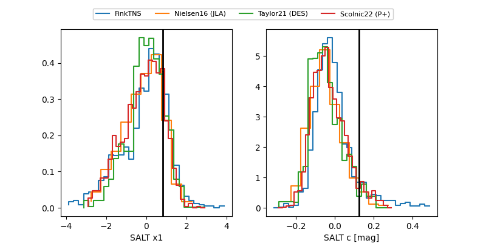

2025afyx
Target 2025afyx at 2025-12-21 04:43
Aliases and brokers:
FINK: fink-portal.org/ZTF25acfxvix
Lasair: lasair-ztf.lsst.ac.uk/objects/ZTF25acfxvix
ALeRCE: alerce.online/object/ZTF25acfxvix
TNS: wis-tns.org/object/2025afyx
YSE: ziggy.ucolick.org/yse/transient_detail/2025afyx
alt names
ZTF25acfxvix (ztf,fink_ztf)
2025afyx (tns,yse)
ATLAS25pit (atlas)
Coordinates:
equatorial (ra, dec) = 327.8882,+22.05162
equatorial (HMS+DMS) = 21:51:33.18,+22:03:05.83
galactic (l, b) = (76.9571,-24.35424)
Flags:
Photometry:
last atlasc=19.02, atlaso=19.19, ztfg=19.45, ztfr=18.93
2 atlasc, 3 atlaso, 5 ztfg, 6 ztfr detections
Lightcurve

Visibility


Additional plots
